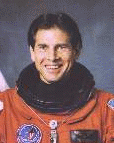

National Aeronautics and Space Administration
Lyndon B. Johnson Space Center
Houston, Texas 77058
- NAME: Samuel T. Durrance (Ph.D.)
-
NASA Payload Specialist
- PERSONAL DATA:
-
Born September 17, 1943, in Tallahassee, Florida, but considers Tampa, Florida his hometown. Married to the former Rebecca Tuggle. Two children. He enjoys going to the beach with his family, scuba diving, flying, running, auto racing, photography, and camping. His parents, Rodney and Leone Durrance, are residents of Lakeland, Florida. Her parents, Tommy and Sue Tuggle, reside in Bossier City, Louisiana.
- EDUCATION:
-
Received a bachelor of science degree and a master of science degree in physics (with honors), California State University, Los Angeles, California, 1972 and 1974, respectively; and a doctor of philosophy degree in astro-geophysics, University of Colorado, 1980.
- PROFESSION:
-
Dr. Durrance is a Principal Research Scientist in the Department of Physics and Astronomy at The Johns Hopkins University, Baltimore, Maryland. He is a co-investigator for the Hopkins Ultraviolet Telescope, one of the instruments of the Astro Observatory.
- ORGANIZATIONS:
-
American Astronomical Society, American Geophysical Union, International Astronomical Union, Association of Space Explorers, Planetary Society, and Phi Kappa Phi.
- EXPERIENCE:
-
Dr. Durrance has been involved in the flight hardware development, optical and mechanical design, construction, and integration of the Hopkins Ultraviolet Telescope and the Astro Observatory. He has conducted research and directed graduate students at the Johns Hopkins University for the past 15 years. He has designed and built spectrometers, detectors, and imaging systems, and made numerous spacecraft and ground-based astronomical observations. He conceived and directed a program at Johns Hopkins University to develop adaptive-optics instrumentation for ground based astronomy. He led the team that designed and constructed the Adaptive Optics Coronagraph, which led to the discovery of a cool brown dwarf -- the first unambiguous detection. His research interests include the origin and evolution of the solar system, the search for planets around other stars, and the origin of life. He has published over 60 technical papers about spacecraft
operations, planetary astronomy, adaptive optics, aeronomy, and nuclear physics.
Dr. Durrance has logged over 615 hours in space as a member of the crew of Space Shuttle Columbia for the STS-35/Astro-1 and Space Shuttle Endeavour for the STS-67/Astro-2 missions.
- CURRENT ASSIGNMENT:
-
Dr. Durrance is located at the Johns Hopkins University Center for Astrophysical Sciences in Baltimore, Maryland. He is a member of the research team analyzing ultraviolet data returned from the STS-67/Astro-2 space shuttle flight. He is also President of Earth Systems Technology, a small company developing new technology for the study and management of Earth's resources.
MAY 1996